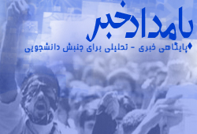

پذيرش > اخبار > آغاز به کار پایگاه خبری-تحلیلی "بامدادخبر"

 آغاز به کار پایگاه خبری-تحلیلی "بامدادخبر" آغاز به کار پایگاه خبری-تحلیلی "بامدادخبر"
16 دی 1387 - - نسخه قابل چاپ

ادوارنیوز:پایگاه خبری-تحلیلی "بامدادخبر"آغاز به کار کرد.
به گزارش ادوارنیوز در اطلاعیه آغاز به کار این پایگاه خبری آمده است«پانزدهم دی ماه هزار و سیصد و هشتاد و هفت مقارن با سوم ژانویه ی ۲۰۰۹ میلادی پایگاه خبری-تحلیلی بامداد خبر به منظور اطلاع رسانی آزاد، تقویت عرصه ی عمومی،کمک به تعامل جنبشهای اجتماعی، ترویج فرهنگ گفتگو و رواداری و با نگاهی معطوف به طرح گرایشهای نوگرای جامعه ی مدنی ایران فعالیت رسمی خود را آغاز می کند.بامداد خبر همانگونه که در بیانیه ی تحریریه(تحت عنوان آنچه باور داریم،آنچه می خواهیم) و منشور اصول اخلاقی و حرفه ای آن آمده است رسانه ایست مستقل که به هیچ حزب و جناحی وابسته نیست و ضمن احترام به تمامی اصحاب رسانه خط مشی مستقل و مدون خویش را پیش خواهد برد، سایت بامداد خبر به جز پوشش روزانه ی اخبار اهتمام ویژه ای به طرح مباحث مرتبط با تاریخ معاصر ایران و جهان،فلسفه ی سیاسی و ادب و هنر خواهد داشت.»
همچنین تحریریه این پایگاه خبری جدید التاسیس اهداف این سایت را چنین عنوان کرده اند:
بامدادخبر در خدمت جامعه ی مدنی و عرصه ی عمومی
ما براساس خواست ها و باورهای خودمان به عنوان یک رسانه ی مستقل از حکومت( قدرت بالفعل) و مستقل از اپوزیسیون (قدرت بالقوه) عمل خواهیم کرد ؛ از این رو نگاه ما بیش از هرچیز معطوف به جامعه مدنی و حوزه عمومی خواهد بود.
بامداد خبر، در پی آنست که آیینه ی جامعه مدنی ایران و نیروهای حاضر در آن با ضعف ها و قوت هایشان باشد ، از آن روست که می گویم آیینه نه سخنگو. کار ما البته منحصر به سپهر سیاسی نخواهد بود . ما جامعه مدنی را در گسترده ترین مفهوم آن مدنظر قرار خواهیم داد ، ازاین رو پرداختن به مسائل مرتبط با فرهنگ و هنر نیز مورد توجه ما خواهد بود. بامداد خبر همچنین می کوشد از طریق طرح گرایش های فکری و سیاسی موجود در حوزه جامعه مدنی به فضایی تبدیل شود برای گفتگوی این گرایش ها و تقویت عرصه عمومی. جامعه ما از ضعف و حتی شاید فقدان حوزه عمومی رنج می برد. در چنین فضایی شاید تولد رسانه ای که هدفش صرفآ تقویت حوزه عمومی ست آنقدرها هم که در بادی امر به نظر می رسد کم اهمیت نباشد.
بامداد خبر و جنبش دانشجویی؛ سیاست دانشگاهی در محور
بامداد خبر رابطه ای تنگاتنگ با دانشگاه و جنبش دانشجویی خواهد داشت ، چرا که به اعتقاد ما از میان نیروهای حاضر در عرصه عمومی ، جنبش دانشجویی به شرط خروج از این وضعیت اسفناک که شاخصه آن ضعف مفرط تئوریک و سردرگمی استراتژیک است می تواند شایسته ترین میانجی گفتگو بین نیروهای متعدد فعال در عرصه جامعه مدنی ایران باشد. درواقع جنبش دانشجویی می بایست آن لولایی باشد که دروازه های گفتگو ، انتقاد و تعامل بر آن بچرخند. ازاین رو ما باور داریم به :
1. موقعیت بالقوه ممتاز جنبش دانشجویی جهت گسترش حوزه عمومی و سامان دادن گفتگو بین جریان های مختلف فکری و سیاسی ایران معاصر. بامداد خبر به سهم خویش خواهد کوشید این توان «بالقوه» ی جنبش دانشجویی را «بالفعل» کند و البته در این راه محتاج همکاری و همفکری طیف های مختلف جنبش دانشجویی است.
۲-جایگزینی «سیاست دانشگاهی» بجای «دانشگاه سیاسی». دانشگاه سیاسی به نظر ما پدیده ای غیرطبیعی ست که در مواقع و مقاطع خاصی در تاریخ برخی کشورها خودنمایی می کند، البته علل و دلایل سیاسی شدن دانشگاه ها بحثی مفصل است که در این مجال اندک فرصت گشودنش نیست ، با اینحال مهمترین کارویژه ی دانشگاه، تولید علم و توسعه ی عقلانیت ساختاری در جوامع است. سیاست نیز بی نیاز از دانشگاه و نگاه دانشگاهی مبتنی بر علم و عقلانیت نیست . ازاین رو بامداد خبر به وسع اندک خویش در راه ارتقای سطح تحلیل فعالین دانشجویی و جایگزینی نگاه علمی به جای نگاه احساسی و رمانتیک خواهد کوشید. ازاین رو تأکید بر «سیاست دانشگاهی» در برابر «سیاست قبیله ای» و «سیاست غریزه ای» و «سیاست رمانتیک»در دستور کار بامداد خبر خواهد بود.
۳. پیشداوری قاتل واقع بینی و در نتیجه مادر توهم است ، و از سوی دیگر گفتگوی مستقیم قاتل پیش داوری است. پیش داوری ها و خط کشی های تاریخی ، یکی از مهمترین دلایل عدم شکل گیری همکاری مؤثر بین نخبگان ایرانی ست؛ حال آنکه همکاری و اجماع نخبگان از جمله شرایط مهم توسعه اقتصادی و سیاسی کشور است. ما به وسع اندک خود می کوشیم که بامداد خبر را به فضایی برای گفتگوی مستقیم و همدلانه نیروهای حاضر در جامعه مدنی تبدیل کنیم.
بامداد خبر و نقد قدرت
ما باور داریم به نقد قدرت ، ولی هم قدرت بالفعل ( حاکمیت مستقر) و هم قدرت بالقوه ( اپوزیسیون) ، و اتفاقآ نقد قدرت بالقوه(اپوزیسیون) را به دلایل متعدد ارجح به نقد قدرت بالفعل (حکومت) می دانیم. در مورد نقد رفتارهای حکومت یا سیاست های فلان دولت ، بسیار گفته و نوشته اند ، حالا دیگر بسیاری از افراد عامی نیز به فصاحت می توانند نقاط ضعف عملکرد سیاسی و اقتصادی حاکمیت را برزبان آورند. اپوزیسیون اما همواره با مظلوم نمایی و سپر قرار دادن هزینه هایی که پرداخته کوشیده است از زیر بار نقد گذشته و حال خود شانه خالی کند. از آنجایی که نقد قدرت( چه بالقوه، چه بالفعل) از جمله کارویژه های جنبش دانشجویی است ، بامداد خبر می کوشد محلی باشد برای گفتگوی انتقادی جنبش دانشجویی با نیروهای دموکراسی خواه تا از این طریق عیار موجود در پس شعارها ، کلی گویی ها و مظلوم نمایی ها عیان گردد و معلوم شود که آیا در پیدایش وضع موجود ، اپوزیسیون آنقدرها که ادعا می کند بی تقصیر است؟ و اینهمه نه به نیت مچ گیری و نزاع بلکه به آن منظور صورت می گیرد که گذشته را چراغ راه آینده سازیم و از تکرار اشتباهات پیشین اجتناب کنیم .
طبیعتآ گردانندگان بامداد خبر به لحاظ سیاسی و فلسفی ،افکار خاص خودشان را دارند( بین ما نیز تنوع وجود دارد) ، ما منکر آن نیستیم که ممکن است افکار سیاسی و معرفتی هر یک از اعضای تحریریه، ناخوداگاه در جهت گیری مطالب ایفای نقش کند ، با اینحال مهم این است که پنجره های بامداد خبر به روی دیگران نیز گشوده است تا با ارسال نقدها و نوشته هایشان فضای گفتگو را چند طرفه و جدی کند. بامداد خبر تمام تلاش خود را به کار خواهد گرفت تا تنوع موجود در جامعه مدنی را بازتاب دهد .
بامداد خبر،دموکراسی،حقوق بشر و جنبشهای اجتماعی
ما درعین حال به دموکراسی و حقوق بشر باورمندیم ، بامداد خبر البته رسانه ای برای افشاگری و داد و فریاد نیست ، با اینحال ما ضمن بازتاب دادن اخبار موثق در زمینه نقض حقوق بشر و اصول و موازین دموکراسی ،در مسیر تقویت این دو ارزش مهم دنیای مدرن خواهیم کوشید؛ ضمن اینکه بررسی وضعیت و زمینه های همکاری بین جنبش های مختلف اجتماعی مانند جنبش زنان ، جنبش کارگری ، جنبش طبقه متوسط شهری و جنبش دانشجویی از اولویت های ما خواهد بود.
بامداد خبر که با عنوان پایگاه خبری-تحلیلی برای جنبش دانشجویی آغاز به کار کرده است در آدرس زیر قابل دسترسی است:
www.bamdadkhabar.com
ارسال به
بالاترین
،
توییتر
،
فریندفید
،
فیسبوک
در همين بخش :
 پروین ذبیحی برنده جایزه حقوق بشری سازمان غيردولتى اتريشى سودويند شد پروین ذبیحی برنده جایزه حقوق بشری سازمان غيردولتى اتريشى سودويند شد
پخش کارت پستال و بروشور در روز جهانی زن در تهران
تمدید زمان برای امضای بیانیهی جمعی از فعالان زن به مناسبت هشت مارس
مجوزی که در نطفه خفه شد
بیش از 2000 امضا در اعتراض به تبعیض های آموزشی به مجلس تحویل داده شد
ديگر بخش ها :
طرح یک میلیون امضا
|
مقالات
|
سایت نوشته ها
|
اخبار
|
گزارش كمپين
|
گفت و گو
|
علیه سکوت
|
كوچه به كوچه
|
نامه های شما
|
گزارش ویژه
|
گفتگو با اعضا
|
ویژه سالگرد کمپین
|
تصویر برابری
|
دل آرام علی
|
تریبون
|
مقالات
|
تاریخ شفاهی
|
خارج از چارچوب
|
کتابخانه
|
درباره کمپین
|
کمپین در شهرها
|
کمپین در بند
|
صدای تغییر
|
ویژه 22 خرداد
|
لایحه حمایت از خانواده
|
گالری
|
عشا مومنی
|
امیر یعقوبعلی
|
خدیجه مقدم
|
راحله عسگری زاده و نسیم خسروی
|
پروین اردلان،جلوه جواهری، مریم حسین خواه، ناهید کشاورز
|
زینب پیغمبرزاده
|
سعیده امین، سارا ایمانیان، محبوبه حسین زاده، ناهید کشاورز و همایون نامی
|
احترام شادفر
|
نسیم سرابندی زاده،فاطمه دهدشتی
|
وبلاگ مهمان
|
پرونده خرم آباد
|
دستگیری ها
|
مریم مالک
|
پرستو اللهیاری
|
مهرنوش اعتمادی
|
سمیه رشیدی
|
Other Languages
|
همراهان
|
«فراخوان کمپین ده روز با بهاره هدایت»
| English
|